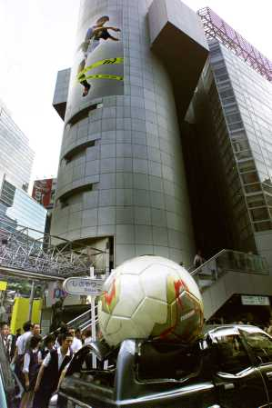

Ressources en Développement
Les psychologues humanistes branchés !
Par Jean Garneau , psychologue
La lettre du psy
Volume 6, No 6: Juin 2002
| Avant d'imprimer ce document | Mise en garde | Articles |
Il y a quatre ans, lorsque la France est sortie du "Mundial" avec la victoire finale, j’avais été impressionné par les réactions des partisans. J’étais fasciné par le bonheur intense d’un grand nombre de personnes un peu partout au monde, même dans les rues de Montréal.
Grâce à cette victoire obtenue par une vingtaine d’athlètes professionnels, des millions d’individus étaient non seulement contents; ils étaient vraiment fiers, comme s’ils venaient d’accomplir eux-mêmes une grande prouesse. Chacun d’entre eux était alors un champion, même si sa contribution réelle s’était limitée à interpeller un écran de télé à des milliers de kilomètres de distance! Tous ces français d’origine ou d’adoption faisaient réellement partie de l’équipe gagnante.

Par un curieux hasard, l’équipe de France a été éliminée cette année dès le premier tour, provoquant une vive déception chez ses partisans. Cet événement inattendu m’a donné l’occasion de comparer nos réactions dans la victoire et dans la défaite. Je vous livre mes réflexions.J’ai d’abord remarqué que les émotions de la défaite sont nettement plus discrètes que celles qui découlent de la victoire. Il y a quatre ans, les partisans de l’équipe championne n’hésitaient pas à célébrer dans les rues et à bloquer la circulation en affirmant leur suprématie. Mais cette fois, ils m’ont semblé plus intériorisés dans leur déception, se contentant de laisser paraître leur tristesse et d’échanger entre eux. Même les provocations de ceux qui s’associaient aux vainqueurs n’arrivaient pas à les pousser à l’action.
Ceci laisse entrevoir une différence profonde dans nos façons de vivre ces expériences. On pourrait croire que notre identification au vainqueur est moins intériorisée; comme si nous empruntions l’identité et la gloire de nos idoles dans la victoire pour transcender nos limites alors que nous vivons plus individuellement notre propre déception dans la défaite.
La déception est, par définition, moins bruyante et moins explosive que le triomphe. Mais c’est peut-être aussi parce qu’elle est davantage assumée qu’elle est plus intérieure et se fait plus discrète. J’ai d’ailleurs souvent remarqué que les joies trop bruyantes sont généralement celles qu’on cherche à vivre et non celles qu’on éprouve vraiment. Les excès qu’on observe alors sont peut-être surtout le reflet de l’effort, de la frénésie et de la tension qui en résultent plutôt que celui d’une grande intensité dans l’émotion réelle.
J’ai aussi remarqué que les réactions intenses à la victoire sont nettement plus durables que la déception dans la défaite. Après un bref moment de stupeur mêlée de tristesse, les partisans changent radicalement de registre: ils entreprennent vite la distribution des blâmes pour la défaite.
C’est un virage spectaculaire aux implications intéressantes. Alors qu’ils s’identifiaient et s’assimilaient sans réserve au vainqueur en cherchant à profiter de son succès aussi longtemps que possible, ils abandonnent vite le vaincu à son triste sort et prennent leurs distances en adoptant une position de juge. Ils entreprennent de décerner les cartons de la culpabilité et de la responsabilité. Ils se dissocient de l’équipe et critiquent ceux qui les ont privé de l’occasion de parader en vainqueurs.
Il me semble que nous choisissons la position d’analystes critiques plutôt que partenaires dans l’espoir que la distance ainsi créée nous protège de notre tristesse. Nous sommes fiers lorsque nos idoles gagnent la coupe, mais nous refusons de vivre dans la honte lorsqu’ils perdent; nous nous dissocions, nous blâmons et nous cherchons un coupable !
En adoptant cette distance émotionnelle par rapport à ceux dont nous avions fait nos idoles, nous ne faisons pas que nous protéger; nous nous privons en même temps de notre lien avec eux. En nous mettant à l’abri de la déception, nous perdons notre lien avec ceux auxquels on s’identifiait. L’intensité de notre douleur est peu-être diminuée, mais notre perte réelle est encore plus grande et surtout plus importante. Nous abandonnons avec notre tristesse les modèles qui nous servaient à grandir.
Les réactions des partisans à la défaite prématurée de l’équipe italienne m’ont aidé à voir que les jugements accusateurs pouvaient prendre des formes moins néfastes pour le lien avec l’équipe. Il suffit de trouver un tiers vers lequel diriger les reproches et toute l’agressivité qu’ils transportent. Par exemple, il suffit d’accuser les arbitres pour recréer un équilibre qui laisse place à la déception, la tristesse, l’agressivité, la recherche de coupables et le refus du résultat décevant, tout en conservant intact le lien avec l’équipe et l’identification à ses idoles.
Voilà un mécanisme qui fait bien voir comment un bouc émissaire peut devenir une solution facile et attrayante lorsque notre identité ou notre valeur sont menacées par un échec ou une impuissance. L’ennemi commun renforce artificiellement l’identité et les liens de solidarité tout en repoussant ce qui symbolise le danger ou l’échec.
Mais en réalité, il ne s’agit que d’une solution illusoire. La défaite demeure réelle, le coupable qu’on a choisi devient investi d’un pouvoir démesuré et les vainqueurs demeurent vainqueurs.
La vraie solution n’est pas dans cette illusion réconfortante ni dans la recherche des coupables, mais bien dans une analyse soigneuse des causes de l’échec et dans l’adoption des moyens d’y remédier. L’amertume de la défaite est l’ingrédient nécessaire pour trouver le courage de faire cette analyse sans complaisance et sans ménagement. Une harmonie factice rendue possible par l’adoption d’un bouc émissaire nous condamnerait en réalité à l’impuissance et à de nouvelles déceptions découlant à notre aveuglement.
Nous faisons avec nos équipes sportives la même chose que l’enfant qui s’identifie à son parent: nous cherchons à augmenter nos capacités et notre pouvoir. Tant que notre modèle est plus grand, plus fort, plus habile ou plus courageux, nous tentons de nous améliorer cherchant à devenir comme lui. Dès qu’il n’est plus supérieur, il devient urgent de le ramener à des proportions humaines pour éviter qu’il nous entraîne dans sa déchéance. Il faut le considérer de façon réaliste et assumer la responsabilité de notre vie et de notre fierté.
L’évitement de la déception, quelle que soit la méthode adoptée, n’est qu’une fuite qui nous condamne à un échec encore plus grave. La seule solution de croissance c’est de vivre complètement notre déception et notre tristesse devant un résultat trop inférieur à nos attentes. C’est la seule méthode qui permette de comprendre les causes réelles de notre échec et d’adopter les solutions qui nous permettront de grandir.
Lorsqu’il n’est question que de sport professionnel, les enjeux sont anodins. Mais lorsque ce sont nos relations avec nos amis, nos parent, nos conjoints ou nos enfants qui subissent un sort semblable, il est beaucoup plus important d’adopter des stratégies qui conduisent à de vraies solutions. La tristesse et la déception sont des prix à payer, mais elles sont en même temps les sources où nous trouvons l’énergie et le courage nécessaires à la découverte d’une harmonie véritable.
Jean Garneau
Juin 2002